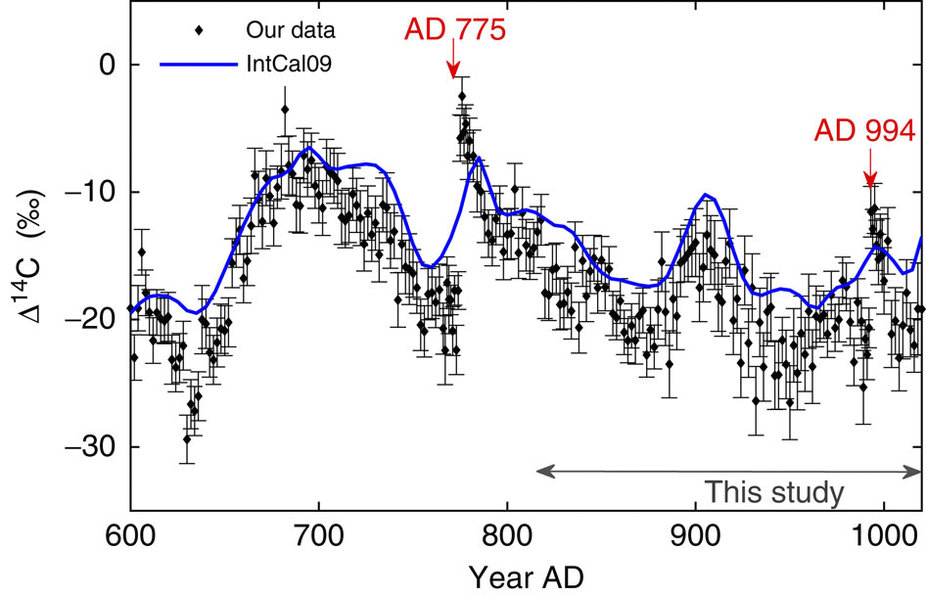
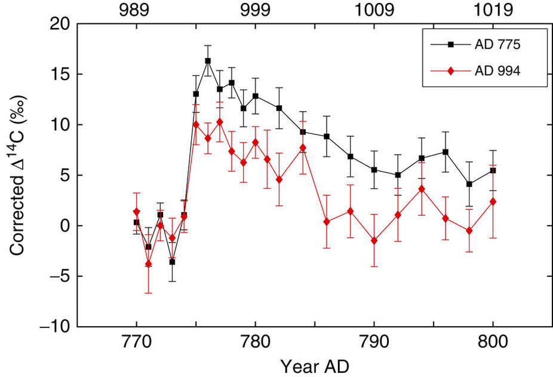
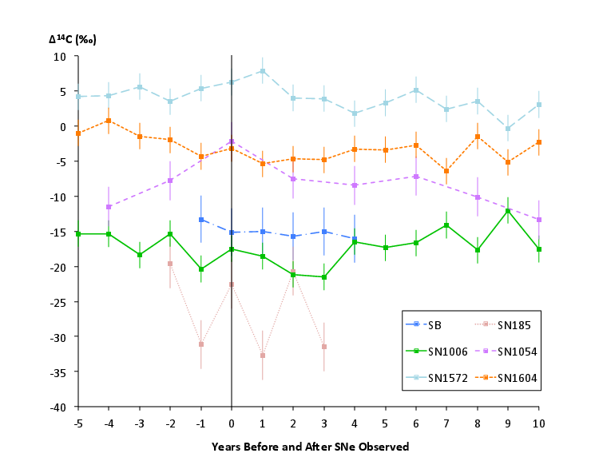
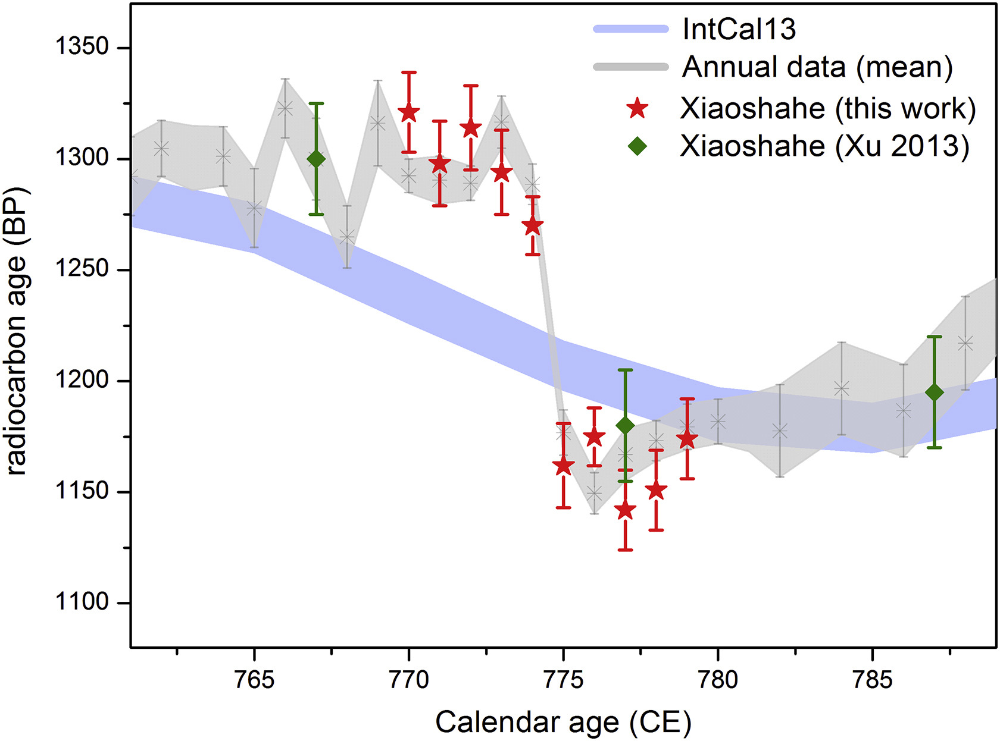
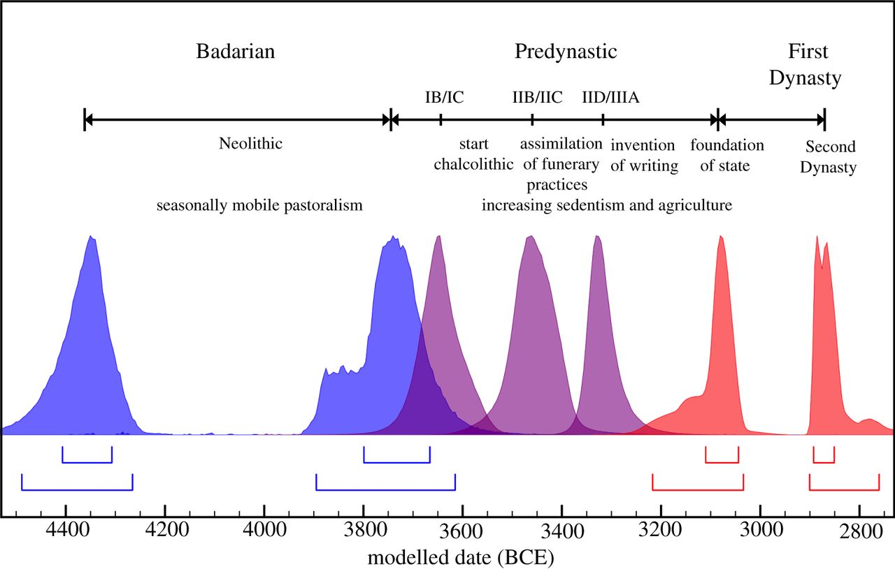
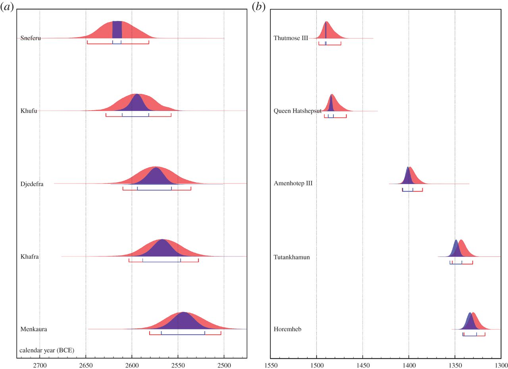
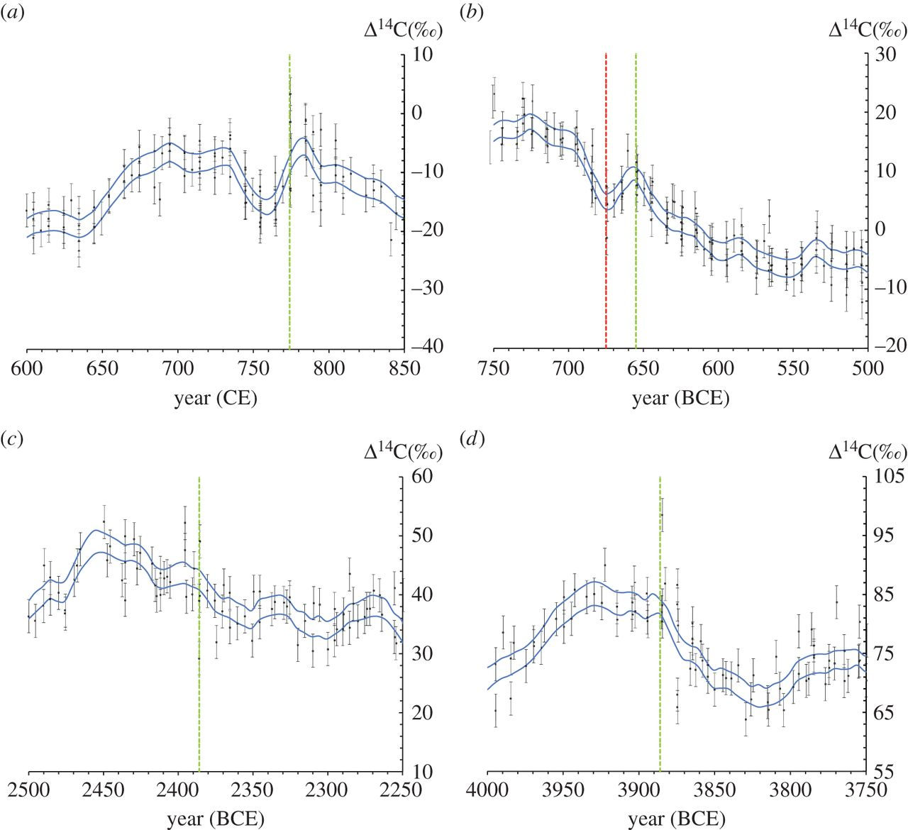

Extreme Solar Events
in the Radiocarbon Record
Miyake Events
774-775 AD

Miyake et al, 2012
Anglo-Saxon Chronicle:
774 AD
“This year also appeared in the heavens a red crucifix, after sunset; the Mercians and the men of Kent fought at Otford; and wonderful serpents were seen in the land of the South-Saxons.”
Allen, 2012
Also in 993-994 AD
Miyake et al, 2013
Comparison
Miyake et al, 2013
5480 BC
Miyake et al, 2017
Supernovae?
No!
Dee, Pope et al., 2016a
Changbaishan Eruption
Dated to 946 CE
Oppenheimer et al., 2017
Rules out previous hypothesis that it contributed to collapse of the Bohai Kingdom (Manchuria/Korea) in 926 CE
Ancient Egypt
Uncertain chronology
Dee et al., 2013
Solved by Miyake events?
Dee et al., 2016A
Finding Further Events
Dee and Pope, 2016b
The Sun
Carrington Event